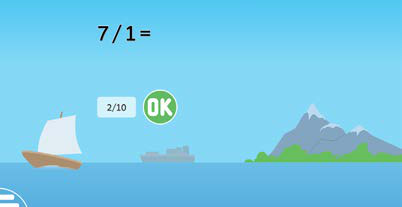
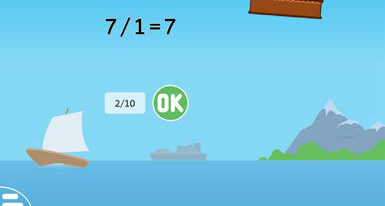

Hatua
1.Fungua kitumizi cha kugawanya namba.
2.Soma / Sikiliza swali linaloonekana kwenye skirini na ulielewe.
3.Andika jibu kwa kubonyeza kitufe cha namba husika.
4.Bonyeza OK kuhakiki jibu lako.
5.Endelea na mazoezi mengine ili kuimarisha ujuzi wa kugawanya.
100